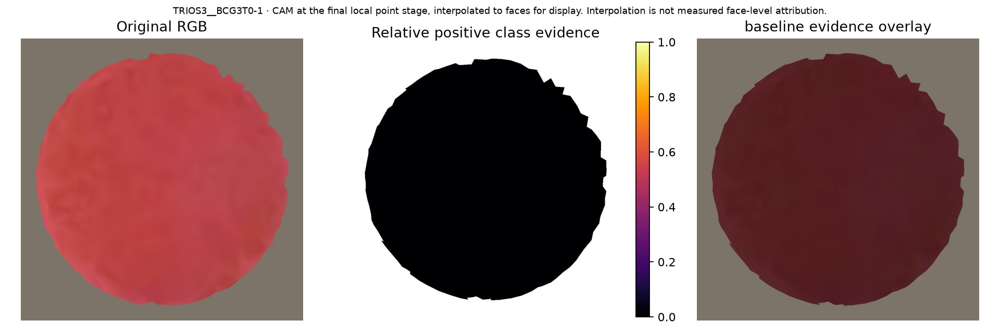
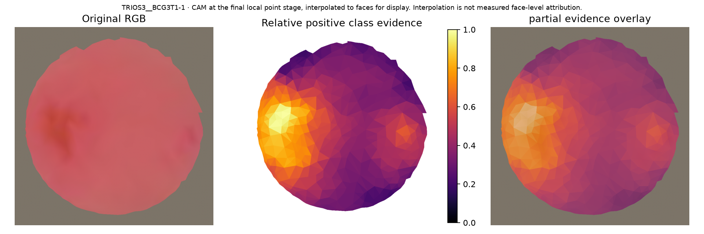
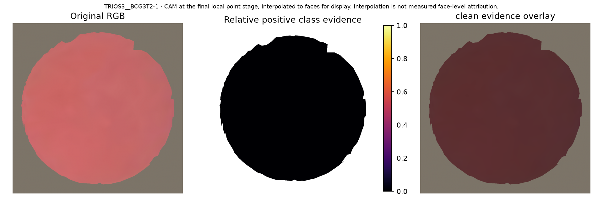

Grad-CAM is computed from local feature gradients for the selected class logit. Warm colours indicate stronger positive evidence within this scan. Colour magnitudes are not comparable across scans/models. A zero map means no positive evidence at this layer. These maps are exploratory explanations, not plaque annotations or calibrated uncertainty. Feature ablation tests sensitivity of internal features, not causal effects of deleting physical surface regions.
CAM at the final local point stage, interpolated to faces for display. Interpolation is not measured face-level attribution.
True: baseline; predicted: baseline; target: baseline (0.966)
Rotate the 3D surface · VTK surface · Feature ablation check
CAM at the final local point stage, interpolated to faces for display. Interpolation is not measured face-level attribution.
True: partial; predicted: partial; target: partial (0.996)
Rotate the 3D surface · VTK surface · Feature ablation check
CAM at the final local point stage, interpolated to faces for display. Interpolation is not measured face-level attribution.
True: clean; predicted: clean; target: clean (0.988)
Rotate the 3D surface · VTK surface · Feature ablation check